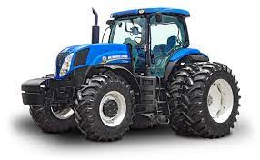

- VISAO GERAL
- ESPECIFICAÇOES TECNICAS
- MODELOS DE T7
VISAO GERAL
Os tratores da linha T7 são robustos e resistentes, com excelente capacidade de trabalho e uma relação perfeita entre produtividade e economia. Com uma grande gama de modelos o produtor pode escolher aquele que melhor se encaixa nas suas necessidades, garantindo o retorno do investimento e o melhor desempenho.
A linha T7 foi a pioneira no Brasil a apresentar, desde o seu lançamento, em 2012, motores com nível de emissões europeu Tier 3, que equivale ao novo MAR-1 do Brasil. Isso significa que a linha T7 já contribui para o meio ambiente desde o seu lançamento.
